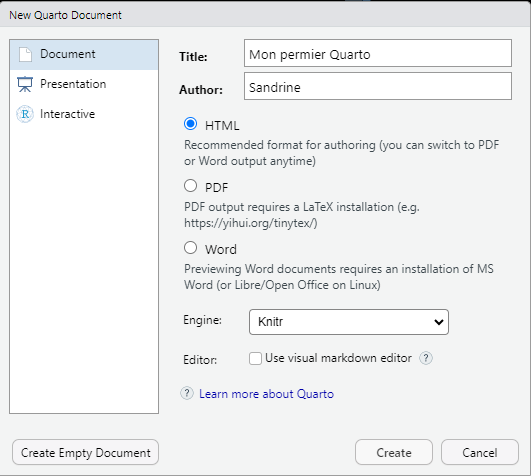

![]()
| Variable | Description | Type |
|---|---|---|
| id | Identifiant unique de l'individu | entier |
| age | Âge de l'individu | entier |
| sexe | Sexe de l'individu | facteur (Femme, Homme) |
| nivetud | Niveau d'études | facteur (8 modalités) |
| poids | Poids de l'individu dans l'échantillon | numérique |
| occup | Occupation principale | facteur (7 modalités) |
| qualif | Qualification professionnelle | facteur (7 modalités) |
| freres.soeurs | Nombre de frères et soeurs | entier |
| clso | Classe sociale | facteur (3 modalités) |
| relig | Religion | facteur (6 modalités) |
| trav.imp | Importance accordée au travail | facteur (4 modalités) |
| trav.satisf | Satisfaction au travail | facteur (3 modalités) |
| hard.rock | Écoute du hard rock | facteur (Oui, Non) |
| lecture.bd | Lecture de bandes dessinées | facteur (Oui, Non) |
| peche.chasse | Pratique de la pêche ou de la chasse | facteur (Oui, Non) |
| cuisine | Pratique de la cuisine | facteur (Oui, Non) |
| bricol | Pratique du bricolage | facteur (Oui, Non) |
| cinema | Fréquentation du cinéma | facteur (Oui, Non) |
| sport | Pratique d'un sport | facteur (Oui, Non) |
| heures.tv | Nombre d'heures passées devant la télévision | numérique |
Jeu de données utilisé dans cette session
hdv2003
- disponible dans le package
{questionr} - échantillon tiré de l’enquête Histoire de vie, réalisée en 2003 en France, par l’Insee, auprès de la population âgée de 18 ans et plus
- 2000 lignes et 20 variables
Dictionnaire des variables
1 Introduction générale
1.1 Vous vous demandez comment…
- rendre votre travail intelligible pour vos collègues (et pour vous) ?
- mettre à disposition du code ?
- assurer une certaine reproductibilité de votre travail ?
- éviter d’innombrables copier-coller de vos résultats pour que votre document Word corresponde bien aux résultats ?
Ces questions ne sont pas nouvelles…
… il existe des outils pour résoudre ces problèmes liés au partage et la reproductibilité du travail
1.2 De la reproductibilité… à la programmation lettrée
1.2.1 Recherche reproductible
L’idée de “recherche reproductible” définie par John Claerbout (1990), comme la possibilité de « réplication [d’un article] par d’autres scientifiques » \(\Rightarrow\) Elle vise à garantir que les résultats scientifiques puissent être reproduits et vérifiés par d’autres
Une recherche/étude/projet est plus ou moins reproductible qu’une autre selon les données et le code disponibles
\(\Rightarrow\) le niveau de reproductibilité dépend de la mise à disposition des données et du code informatique utilisés

Source : Peng, R. D. 2011. “Reproducible research in computational science”, Science 334(6060): 1226–27. https://doi.org/10.1126/science.1213847
1.2.2 Programmation lettrée
- La “programmation lettrée” (literate programming) est une approche conçue par Donald Knuth dès les années 1970
Elle consiste à changer de paradigme de programmation
« Au lieu de considérer que notre tâche principale est de dire à un ordinateur ce qu’il doit faire, appliquons-nous plutôt à expliquer à des êtres humains ce que nous voulons que l’ordinateur fasse. »
Knuth, D. 1984. “Literate Programming”, The Computer Journal 27(2): 97–111. https://doi.org/10.1093/comjnl/27.2.97
- L’idée est donc de combiner du texte et du code dans un seul fichier
- pour qu’il soit compréhensible à la fois par l’être humain et la machine
- qui explique à la fois la logique et les résultats du code
- qui va être interprété par des outils pour produire un document adapté à la lecture par des êtres humains
- pour qu’il soit compréhensible à la fois par l’être humain et la machine
1.2.2.1 Exemple
1.2.2.1.1 Programmation “classique”
# Création d'un vecteur de nombres
x <- c(1, 2, 3, 4, 5)
# Calcul de la moyenne
moyenne <- mean(x)
# Affichage du résultat
print(moyenne)1.2.2.1.2 Programmation lettrée
# Calcul de la moyenne d'un vecteur en R
Dans cet exemple, nous allons créer un vecteur de cinq nombres entiers et calculer sa moyenne à l'aide de la fonction `mean()`.
# Création du vecteur
x <- c(1, 2, 3, 4, 5)
# Calcul de la moyenne
moyenne <- mean(x)
# Affichage du résultat
print(moyenne)
La fonction `mean()` calcule la moyenne arithmétique des valeurs contenues dans le vecteur `x`. Le résultat est ensuite affiché à l'écran.1.2.2.2 Résumé de la différence
| Programmation classique | Programmation lettrée |
|---|---|
| Fichier .R | Fichier .rmd, .qmd |
| Code prédominant | Texte prédominant |
| Commentaires brefs | Explications détaillées en texte |
| Lecture orientée code | Lecture orientée documentation |
2 Introduction à Quarto
2.1 Présentation de Quarto
- Système open-source de programmation lettrée, basé sur
Pandoc, qui- permet de combiner code informatique et texte dans un même fichier
- supporte plusieurs langages de programmation :
R,Python,Julia,JavaScript
- propose une syntaxe
Markdownenrichie pour intégrer code, texte, équations, tableaux et graphiques dans un même fichier.qmd - génère différents formats de rendu (simultanés) : site web, article PDF, document Word, livre électronique, présentation (notamment au format
reveal.js)
- est compatible avec différents IDE :
RStudio,VSCodepar exemple
- contient des fonctionnalités avancées pour la gestion des références, des figures et des tableaux
- permet de combiner code informatique et texte dans un même fichier
\(\Rightarrow\) Avec Quarto, résultats et document sont toujours en phase !
- C’est une extension de
R Markdownqui ajoute de nouvelles possibilités pour une meilleure flexibilité et collaboration
\(\Rightarrow\) C’est un outil très pratique pour la science reproductible
Quarto facilite la reproductibilité en permettant de combiner texte explicatif, code source et résultats dans un même document, assurant ainsi la traçabilité et la reproductibilité des analyses
2.2 Exemple
- Script R avec du code R
# __________________________________________________________________
# Script: Analyse des données hdv2003
# Author: Sandrine
# __________________________________________________________________
# Chargement des packages
library(ggplot2)
# Chargement des données
data(hdv2003)
# Distribution du nombre d'heures passées devant la TV selon le sexe
hdv2003 |>
ggplot() +
aes(x = sexe, y = heures.tv) +
geom_boxplot()
## ==> Pas de différences entre les groupes- Script Quarto avec du code R

- Sortie html d’un document Quarto avec du code R
{kind=link}
3 Premiers pas avec Quarto dans RStudio
3.1 Création d’un premier document Quarto (.qmd)
- Organiser son travail dans un projet RStudio (cf. Bonnes pratiques à ETTIS)
- Créer un nouveau document : Menu File > New file > Quarto document
- dans la fenêtre de dialogue
- donner un titre
- indiquer éventuellement l’auteur
- choisir le format de sortie : HTML, PDF ou Word
- décocher la case “Use visual markdown editor” : privilégier le mode “Source” qui permet de contrôler plus précisément le code

- donner un titre
- sauvegarder ce fichier (à la racine du projet ou dans un sous-dossier)
- dans la fenêtre de dialogue
- Voici à quoi ressemble le fichier .qmd créé

3.2 Structure d’un fichier .qmd
3.2.1 L’en-tête YAML : métadonnées et options du document
- L’en-tête
- s’écrit avec le langage YAML (initialement Yet Another Markup Language puis YAML Ain’t Markup Language)
- est délimitée en haut et en bas, par 3 tirets : “- - -”
- précise les métadonnées telles que le titre, l’auteur, le titre, la date, etc.
- permet de définir différentes options sur les formats de sorties et la mise en page
- permet de paramétrer la langue pour la mise en page, notamment pour la sortie pdf, la génération de la table des matières
- s’écrit avec le langage YAML (initialement Yet Another Markup Language puis YAML Ain’t Markup Language)
- Le YAML est le premier élément évalué lors de la compilation
- La syntaxe est très sensible à l’indentation : ajouter 2 espaces pour chaque niveau d’indentation
\(\Rightarrow\) en cas d’erreur, la compilation s’arrête quasi instantanément !
La gestion de la ponctuation et des guillemets dépend du contenu en markdown ou en texte. Elle n’est pas gérée par une syntaxe spécifique à Quarto.
Pour utiliser les guillemets français dans un document Quarto, il faut taper directement les guillemets français :
Exemple
« On utilise les guillemets français »
3.2.1.1 Version minimale
---
title: "Mon premier Quarto"
author: "Sandrine"
format: html
---3.2.1.2 Version plus détaillée
---
title: "Mon premier Quarto"
subtitle: "Exemple d'en-tête YAML détaillée"
date: 2025-06-26
author: "Sandrine"
institute: "Inrae ETTIS"
lang: fr
format:
html:
toc: true
number-sections: true
css: styles.css
editor: source
---
Voir la documentation Quarto pour plus d’informations sur les nombreuses options disponibles
- section Front matter
- pour le format HTML
- pour le format PDF
- pour le format Word
- pour le format Revealjs
- pour le format Powerpoint
3.2.2 Le corps du document : texte en markdown enrichi
- Le texte est balisé avec le langage
markdownpour la mise en forme
- Il n’est pas possible de souligner du texte en
markdown: le soulignement est réservé aux liens hypertextes - On peut ajouter du texte, des listes, des tableaux, des liens vers des pages web, des images, etc.
Bases en markdown
- Cette syntaxe permet de gérer les citations et les références croisées
3.2.2.1 Syntaxe markdown pour la mise en forme du texte
| Caractéristique | Syntaxe markdown | Résultat |
|---|---|---|
| italic | texte en *italique* |
texte en italique |
| bold | texte en **gras** |
texte en gras |
| superscript | superficie de 200 m^2^ |
superficie de 200 m2 |
| subscript | Les individus notés n~i~ |
Les individus notés ni |
| strikethrough | texte ~~barré~~ |
texte |
| headings | # Titre 1 |
4 Titre 1 |
## Titre 2 |
4.1 Titre 2 |
|
### Titre 3 |
4.1.1 Titre 3 |
|
#### Titre 4 |
4.1.1.1 Titre 4 |
|
##### Titre 5 |
4.1.1.1.1 Titre 5 |
|
###### Titre 6 |
4.1.1.1.1.1 Titre 6 |
|
| links | Site [Quarto](https://quarto.org/) |
Site Quarto |
| visible links | le lien est <https://quarto.org/> |
le lien est https://quarto.org |
| quote | > ceci est important à retenir |
|
4.1.1.2 Syntaxe pour écrire du texte sur plusieurs colonnes
Pour écrire du texte sur plusieurs colonnes, on utilise la balise :::: {.columns} puis les sous-blocs ::: {.column} pour chaque colonne, pour laquelle on peut ajuster la largeur avec le paramètre width="100%"
Syntaxe markdown
:::: {.columns}
::: {.column width="60%"}
Contenu de la colonne de gauche.
Texte long possible.
:::
::: {.column width="40%"}
Contenu de la colonne de droite.
:::
::::Résultat
Contenu de la colonne de gauche.
Texte long possible.
Contenu de la colonne de droite.
Note
On ajoute autant de colonnes que nécessaire avec le bloc
::: {.column}
Le texte d'une colonne
:::4.1.1.3 Syntaxe pour les listes
4.1.1.3.1 non ordonnées
Syntaxe markdown
* item 1
+ sous-item 1
+ sous-item 2
- sous-sous item 1
- sous-sous item 2
* item 2Résultat
- item 1
- sous-item 1
- sous-item 2
- sous-sous item 1
- sous-sous item 2
- sous-sous item 1
- sous-item 1
- item 2
4.1.1.3.2 ordonnées
Syntaxe markdown
1. item 1
a) sous-item 1
b) sous-item 2
i. sous-sous item 1
ii. sous-sous item 2
2. item 2Résultat
- item 1
- sous-item 1
- sous-item 2
- sous-sous item 1
- sous-sous item 2
- sous-sous item 1
- sous-item 1
- item 2
4.1.1.4 Syntaxe pour l’ajout de tableaux
4.1.1.4.1 Tableaux “manuels”
Syntaxe markdown
| Colonne 1 | Colonne 2 | Colonne 3 | Colonne 4 |
|:------------|:-----------:|------------:| ----------- |
| Alignement | Alignement | Alignement | Alignement |
| à gauche | centré | à droite | par défaut |
: Titre du tableau.Résultat
| Colonne 1 | Colonne 2 | Colonne 3 | Colonne 4 |
|---|---|---|---|
| Alignement | Alignement | Alignement | Alignement |
| à gauche | centré | à droite | par défaut |
L’alignement dans les cellules est contrôlé avec les :
Voir la page d’aide Quarto dédiée pour les options disponibles
Un outil en ligne pour générer des tableaux markdown
4.1.1.4.2 Tableaux de résultats R
- Affichage par défaut des tableaux
hdv2003 |>
select(id:qualif) |>
slice(1:2) id age sexe nivetud poids
1 1 28 Femme Enseignement superieur y compris technique superieur 2634.398
2 2 23 Femme <NA> 9738.396
occup qualif
1 Exerce une profession Employe
2 Etudiant, eleve <NA>- Affichage avec la fonction
kable()du package{knitr}
hdv2003 |>
select(id:qualif) |>
slice(1:2) |>
knitr::kable()| id | age | sexe | nivetud | poids | occup | qualif |
|---|---|---|---|---|---|---|
| 1 | 28 | Femme | Enseignement superieur y compris technique superieur | 2634.398 | Exerce une profession | Employe |
| 2 | 23 | Femme | NA | 9738.396 | Etudiant, eleve | NA |
4.1.1.5 Syntaxe pour l’ajout d’images
- L’ajout d’images se fait avec la syntaxe générique suivante

Syntaxe markdown

Résultat

Bonne pratique = ajouter une description alternative pour améliorer l’accessibilité pour les malvoyants
{fig-alt="Logo de Quarto"}Des paramétrages possibles pour
- la taille de l’image
- l’alignement horizontal
- une disposition en lignes ou en colonnes dans le cas de plusieurs images
Voir la page d’aide Quarto dédiée pour les options disponibles
- la taille de l’image
4.1.1.5.1 Exemple
Syntaxe markdown
::: {#fig-logos layout-ncol=2}
{#fig-logo1 width="40%" fig-align="left" fig-alt="Logo de Quarto hexagonal"}
{#fig-logo2 fig-align="right" fig-alt="Logo de Quarto horizontal"}
Deux versions du logo quarto
:::Résultat
4.1.1.6 Syntaxe pour l’ajout d’équations
L’écriture d’équations mathématiques est possible avec la syntaxe LaTeX, en ligne ou en “bloc”
4.1.1.6.1 Équation au sein d’un texte
Syntaxe
La célèbre équation d'Einstein est $E = mc^2$.Résultat
La célèbre équation d’Einstein est \(E = mc^2\).
4.1.1.6.2 Équation en bloc centré
Syntaxe
La célèbre équation d'Einstein est
$$
E = mc^2
$$Résultat
La célèbre équation d’Einstein est
\[
E = mc^2
\]
4.1.1.7 Syntaxe pour l’ajout de blocs spéciaux (callout blocks)
- Ces blocs spéciaux sont utiles pour mettre en valeur une information importante (texte, conseil, avertissement, etc.)
- Il existe 5 types prédéfinis de callout blocks (note, tip, warning, caution et important) qui se différencient par leurs couleurs et icônes, et qui ont 3 formats de sortie possibles (default, simple ou minimal)
Structure
:::{.callout-type} pour spécifier le type de bloc, avec éventuellement l’ajout d’un titre avec title="Titre de mon bloc" dans les accolades
du texte
::: pour fermer le bloc
Voir la page d’aide Quarto dédiée pour les options disponibles
Exemples
callout-note
Syntaxe d’un bloc de code ‘note’ avec titre et apparence par défaut
:::{.callout-note title="*callout-note*" appearance="default"}
Apparence par défaut d'un bloc de code 'note' avec titre
:::Apparence simple d’un bloc de code ‘tip’ sans titre
:::{.callout-tip appearance="simple"}
Apparence simple d'un bloc de code 'tip' sans titre
:::
callout-caution
Apparence simple d’un bloc de code ‘caution’ avec titre
:::{.callout-caution title="*callout-caution*" appearance="simple"}
Apparence simple d'un bloc de code 'caution' avec titre
:::4.1.2 Les blocs de code : import, manipulation, visualisation des données et résultats
- Possibilité d’écrire du code (R, Python, HTML, SQL, Stata, etc.) directement dans le document, dans ce que l’on appelle des blocs de code (aussi appelés chunks)
- Ce code est exécuté directement dans le document
- Les résultats produits sont insérés automatiquement dans le rendu final
- De nombreuses options permettent de personnaliser l’exécution du code et l’affichage des résultats dans le document final
4.1.2.1 Pourquoi c’est utile ?
Les blocs permettent de
- générer des rapports “dynamiques”, où code et résultats sont intégrés directement dans le texte
- garder une trace exacte du code utilisé, ce qui favorise la reproductibilité
\(\Rightarrow\) Très utiles pour intégrer, exécuter et présenter du code et ses résultats dans un seul et même document
4.1.2.3 Exemple de bloc de code
```{r}
#| label: fig-exemple
#| eval: true
#| warning: true
#| message: false
#| output: true
#| fig-cap: Distribution des heures passées devant la télé selon le sexe
#| fig-width: 3
#| fig-height: 4
#| fig-align: center
hdv2003 |>
ggplot() +
aes(x = sexe, y = heures.tv) +
geom_boxplot()
```Warning: Removed 5 rows containing non-finite outside the scale range
(`stat_boxplot()`).{kind=link}
4.1.2.4 Gestion de l’exécution du code de de l’affichage de son résultat
| Option | Description |
|---|---|
eval: true/false |
Exécuter le code du bloc |
echo: true/false |
Afficher le code dans le document final |
include: true/false |
Contrôler l’inclusion du code et/ou des résultats dans le document final (false : supprime tout) |
output: true/false/asis |
Afficher les résultats du code (asis pour du markdown brut) |
warning: true/false |
Inclure les avertissements générés dans le document final |
message: true/false |
Afficher dans le document final, les messages générés par le code |
label |
Donner un nom au bloc (utile pour le référencer et y faire appel dans le texte) |
fig-cap |
Ajouter une légende à une figure générée par le code |
fig-width / fig-height |
Définir la largeur/hauteur des figures produites par le code |
4.1.2.4.1 Les labels des blocs de code
- Quelques règles à respecter
- les labels doivent être uniques dans le document
- ils sont composés de chiffres et de lettres, les tirets
-et les underscores_sont autorisés, les espaces et caractères spéciaux sont à éviter
- placer le label de préférence en haut du bloc, avant les autres options
- pour y faire référence dans le texte
- les labels des tableaux, doivent être de la forme
tab-nom
- les labels des figures (images, graphiques) doivent être de la forme
fig-nom
- utiliser
@nom-du-labeldans le texte
- les labels des tableaux, doivent être de la forme
- les labels doivent être uniques dans le document
- Exemple
Syntaxe
Comme illustré dans la @fig-exemple, il n'y a pas de différences entre les groupes.
Résultat
Comme illustré dans la Figure 2, il n’y a pas de différences entre les groupes.
4.1.3 Aperçu des principaux formats de sortie (HTML, PDF, Word)
- Le document source étant rédigé, il faut “l’interpréter” pour voir le rendu final
- Principaux formats de sortie
- HTML : pour des documents interactifs ; format particulièrement bien adapté à la diffusion
- PDF : pour des documents statiques, avec mise en page fixe ; format particulièrement bien adapté pour les publications scientifiques
- docx : pour des documents éditables sous Word ; format particulièrement bien adapté au travail collaboratif
- slides : pour les présentations interactives au format HTML (RevealJS), PDF (Beamer) ou Powerpoint ; format particulièrement bien adapté aux présentations pour des colloques, des cours, etc.
- HTML : pour des documents interactifs ; format particulièrement bien adapté à la diffusion
Il est donc possible de couvrir différents formats de sortie, à partir d’un même fichier source, en paramétrant le format et les options de rendu, dans l’en-tête YAML
4.1.3.1 Paramétrage pour un format de sortie particulier
Exemple pour un document au format html
---
title: "Mon premier Quarto"
author: "Sandrine"
format: html
---Le rendu est celui par défaut, sans paramétrage particulier
4.1.3.2 Paramétrage pour plusieurs formats simultanément
Exemple pour un document avec 3 formats de sortie (HTML, PDF, Word), avec paramétrage par défaut
---
title: "Mon premier Quarto"
author: "Sandrine"
format:
html: default
pdf: default
docx: default
---4.1.3.3 Personnaliser son document de sortie
---
title: "Mon premier Quarto"
author: "Sandrine"
format:
html:
output-file: index.html # nom du fichier de sortie
theme: "cosmo"
---4.1.3.3.1 Créer une table des matières
---
title: "Mon premier Quarto"
author: "Sandrine"
format: html
toc: true
---4.1.3.3.2 Insérer une bibliographie
---
title: "Mon premier Quarto"
author: "Sandrine"
format: html
bibliography: mon_fichier.bib
---4.1.3.3.3 Personnaliser l’apparence
Pour un document au format HTML : avec les thèmes prédéfinis ou en créant un fichier css
Pour un document au format Word : créer un modèle sous Word et y faire référence dans l’en-tête YAML
5 Ressources
5.1 Pour aller plus loin
De nombreuses ressources en ligne
Documentation officielle Quarto
Tutoriel Markdown
Tutoriel Quarto
etc.
5.2 Références
Claerbout, J. 1990. « Active documents and reproducible results ». Stanford Exploration Project Report 67: 139‑44. https://sepwww.stanford.edu/data/media/public/docs/sep67/jon2/paper_html/index.html.
4.1.2.2 Comment écrire un bloc de code ?
```{}sur la première ligne, à la suite des```#|option: value```Il est également possible d’intégrer directement du code dans une phrase (inline code), pour mettre en évidence une commande ou afficher le résultat d’un calcul, sans interrompre le texte
Dans ce cas, on utilise un seul backtick ` pour encadrer le code
Syntaxe
L’âge moyen des 2000 observations de hdv2003 est égal à 48.157
Résultat
L’âge moyen des 2000 observations de hdv2003 est égal à 48.157